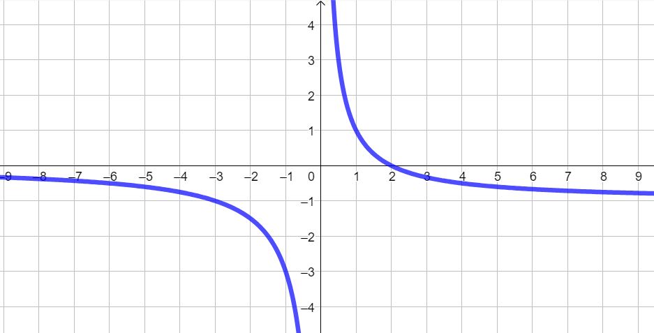

Si consideri la funzione
\[
f:\quad y = \dfrac{2 -x}{x}
\]
-
Calcolare i seguenti valori assunti dalla funzione:
\[
f(1) \quad f(-3) \quad f\left(\dfrac{7}{2}\right) \quad f(0)
\]
-
Per quale valore della variabile \(x\) la funzione assume valore \(0\)?
-
Per quale valore della variabile \(x\) la funzione assume valore \(-3\)?
-
Stabilire se il punto \(\left(-4\,;\,\,-\dfrac{3}{2}\right)\) appartiene al grafico di \(f\).
-
Il seguente grafico non rappresenta la funzione \(f\).
Spiegarne il motivo sfruttando le informazioni ottenute nei punti precedenti.

 presente in alto a destra del paragrafo)
presente in alto a destra del paragrafo)